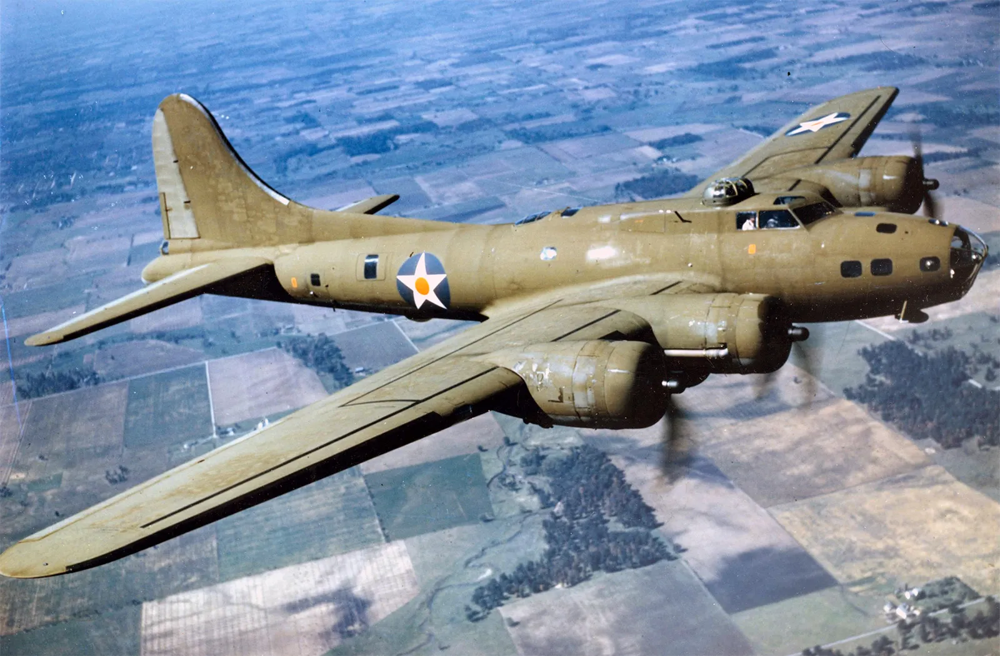
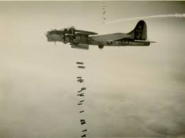
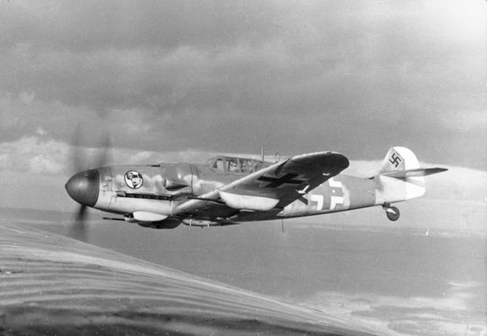
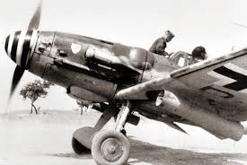

The B-17 Flying Fortress was a World War 2 heavy bomber designed by Boeing, with approximately 12,500 units produced and used by the US Army Air Corps.

It used four engines for greater reliability and redundancy, while allowing it to carry a larger bomb payload of up to 8,000 pounds. While on a mission, it could carry a crew of up to ten people. The crew would consist of a pilot, co-pilot, navigator or radioman, bombardier, and several gunners. With several turrets, each equipped with one to two .50 caliber machine guns, the B-17 provided 360-degree defense against enemy fighters. The aircraft was designed to fly above the range of the German anti-aircraft weapons and, if shot at, would still be able to complete the mission with minimal casualties.
It would typically be used for carpet bombing (dropping a large number of bombs over a wide area), but was also used for strategic bombing missions, which would include bombing factories or military installations. B-17s were primarily used in the European Theater. However, they were used for a few missions in the Pacific Theater. It was typically escorted by P-51 Mustangs or occasionally P-47 Thunderbolts. Even though the B-17 was extremely robust and heavily protected from aerial threats with both the use of turrets and escort fighters, it still suffered heavy losses during the war. During the beginning of the war, about five to ten percent of the bombers were lost on each mission, although near the end of the war, it dropped to less than five percent.The Bf-109 was a German fighter designed by Willy Messerschmitt to suit the role of a high-performance

single-seat fighter. It was originally armed with four 7.62 millimeter machine guns on the Bf-109B variant before receiving the addition of two 20 millimeter cannons on the wings on the Bf-109E variant. At low altitudes, it outmatched any aircraft it faced; however, at altitudes above 15,000 feet, it was typically defeated by the British Spitfire. A major downside of the aircraft was that it could carry only a small amount of fuel because the gear would retract into the wings. This was later fixed by adding external fuel tanks. After the Allies began bombing missions into Nazi territory, the Bf-109s were outfitted with 210 millimeter rockets that they would fire into the flights of bombers before commencing attacks with their traditional
weaponry. However, when the bombers gained escorts, the Bf-109s dropped the rockets. The most widely produced and used variant of the Bf-109 was the G-6, which was armed with a 30-millimeter cannon and two 13-millimeter machine guns. The final variant of the Bf-109 was the Bf-109K, which entered service in 1944. It was capable of reaching speeds of up to 452 miles per hour with a max altitude of 41,000 feet. Overall, these aircraft were extremely effective and were a major threat to the Allied forces throughout the war.